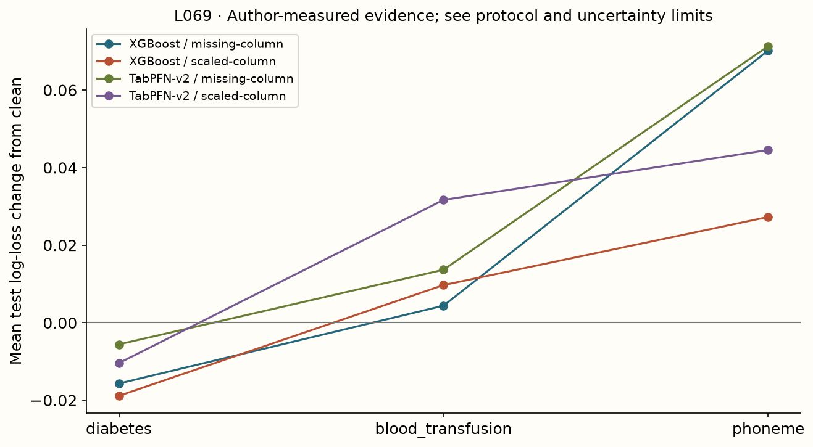

Year 2 · Quarter 3 · Lesson 069
Find the broken prediction contract
Understand the computation. Challenge the evidence. Produce a defensible result.
Core reading: 35–50 minutes. Lab: 45–75 minutes plus declared experiment time. This sequence builds the strong single-table baseline and information discipline required to test the relational thesis.
Retrieve before reading
Without notes: Can unsupported-class rows be dropped while claiming all-row deployment accuracy? Explain why, then recall a related failure mode from an older lesson.
A strong closed-task score leaves several contracts untested¶
Your goal is to identify which assumption broke before trying to repair a foundation model. Read Cheng et al., Sections 4–5. Its open-environment evaluation separates emerging classes, changing features, changing data distributions and changing learning objectives. These are different failure axes, so one aggregate “robustness” number can conceal the actual problem.
A closed classification task usually assumes a fixed feature schema, target definition and class vocabulary. Deployment can violate any of them. The model may return probabilities of the expected shape while answering the wrong question. An honest baseline report therefore records the prediction contract as well as the score: what rows mean, which features exist, which labels are possible and how the prediction will be used.
A prediction API promises more than an average score¶
A closed classification benchmark usually assumes a fixed feature schema, known class vocabulary and stable evaluation objective. Deployment can violate any of these assumptions. A model may retain strong performance on supported rows while failing to define a useful prediction for other required cases.
Write the contract explicitly: which rows must receive predictions, which classes the output vector represents, what each feature means and when it is available, and which loss or decision cost matters. Robustness is always relative to a specified change in this contract.
Unsupported classes, missing columns, changed units and changed decision costs are different failures. A single “open environment” score can hide which part of the system broke. The lesson uses separate interventions so each result has an interpretable cause.
The local experiments combine measured feature-corruption comparisons with a synthetic unsupported-class diagnostic. The latter exposes scoring semantics; it is not a measured open-set detection system. Keep that distinction visible when discussing what the pretrained model actually did.
Unsupported classes require a visible policy¶
Suppose context contains only classes A and B, and the classifier emits [.2,.8]. A later target belongs to new class C. The original two-class probability vector cannot assign calibrated probability to C. Dropping that row from evaluation falsely improves apparent performance, while relabeling C as B changes the task.
The lab's diagnostic assigns unsupported labels zero probability, then clips at a declared epsilon only to obtain a finite log-loss value. With epsilon 1e−12, a wholly unsupported target contributes about 27.63 nats. This is a diagnostic scoring convention, not a calibrated open-set detector. A deployment system might abstain, route the case or update its class vocabulary; each requires its own evaluation and coverage report.

Keep known-class performance, unsupported-class frequency, abstention coverage and performance on all required rows separate. A high accuracy on the accepted subset is not enough if the model silently rejects most difficult cases. Thresholds for abstention must be chosen on validation evidence that represents the intended unknown-class process.
A probability vector must name the events it covers¶
Suppose a classifier returns probabilities for classes [A,B], while a required test row has target C. There is no C column to score. Dropping the row changes the evaluated population. Relabeling C as B changes the task. A fallback or rejection policy must be declared explicitly.
The local diagnostic assigns unsupported true classes a disclosed probability floor ε for all-row log-loss accounting. With ε=10⁻¹², that row contributes −ln ε≈27.631 nats. This is a scoring convention that makes missing support costly and visible; it does not mean the model learned a calibrated probability for the unknown class.
If four supported rows each assign 0.8 to the correct class and one row is unsupported, mean all-row loss is [4·(−ln0.8)−ln(10⁻¹²)]/5≈5.705. Dropping the unsupported row reports only 0.223. The dramatic difference comes from coverage and the declared floor, not a subtle change in classification quality.
Report coverage separately from conditional performance on supported rows. If the system can abstain, evaluate the abstention rule and its cost: how many rows are rejected, which kinds and what happens operationally afterward? A model that rejects every difficult case can look accurate on its retained subset while being unhelpful overall.
Class-column alignment remains necessary even when all classes are supported. A probability matrix ordered [B,A] cannot be scored as [A,B]. Save the class vocabulary and check that it has no duplicates and matches the array width.
Epsilon is a sensitivity parameter, not a hidden repair¶
A different floor changes the penalty assigned to unsupported events. Disclose it and, when the conclusion depends on it, show sensitivity across reasonable declared conventions. Do not tune epsilon after seeing which value makes the system look acceptable. The missing class support is a substantive limitation regardless of the reporting floor.
A feature change has several meanings¶
Removing a column is a schema change. Replacing it by a training-derived imputation value is one explicit fallback; its usefulness depends on how the model was trained. Adding a new feature can change dimensional limits and representation behavior. Changing a sensor's units without changing the schema is a distributional change that may look superficially like ordinary numerical variation.
The measured intervention holds trained models and test rows fixed, then alters one column selected using training variation only. One condition replaces it with its training mean; another scales its deviation from that mean by three. The clean condition remains visible. This isolates sensitivity to two corruptions and gives each arm identical altered data. It does not reproduce natural temporal drift, missing-not-at-random mechanisms or every feature-addition scenario in the paper.

Measured interpretation. The three-task corruption panel retains every test row and pairs each intervention with its clean baseline. The separate synthetic unseen-class fixture has all-row log loss 9.359 with epsilon 1e−12. It is a class-support diagnostic, not measured v2 open-set detection performance.
Inspect the numerical evidence table
| mean | std | |||
|---|---|---|---|---|
| dataset | arm | condition | ||
| blood_transfusion | TabPFN-v2 | clean | 0.4726 | 0.0190 |
| missing-column | 0.4863 | 0.0174 | ||
| scaled-column | 0.5043 | 0.0208 | ||
| XGBoost | clean | 0.4896 | 0.0094 | |
| missing-column | 0.4940 | 0.0050 | ||
| scaled-column | 0.4993 | 0.0058 | ||
| diabetes | TabPFN-v2 | clean | 0.5083 | 0.0219 |
| missing-column | 0.5027 | 0.0175 | ||
| scaled-column | 0.4979 | 0.0139 | ||
| XGBoost | clean | 0.4780 | 0.0063 | |
| missing-column | 0.4623 | 0.0058 | ||
| scaled-column | 0.4591 | 0.0083 | ||
| phoneme | TabPFN-v2 | clean | 0.3131 | 0.0127 |
| missing-column | 0.3844 | 0.0102 | ||
| scaled-column | 0.3576 | 0.0200 | ||
| XGBoost | clean | 0.3334 | 0.0057 | |
| missing-column | 0.4036 | 0.0082 | ||
| scaled-column | 0.3606 | 0.0048 |
The compared arms are pinned Nature-v2 inference and a small XGBoost recipe on three real binary datasets, with three seeds. The test corruption is a prespecified intervention, not a selected attack optimized against the test labels. A model's smaller degradation here supports a narrower statement than “robust in open environments.” Inspect both absolute error and the paired change from clean performance; a poor clean model can have little room to degrade.
Distinguish information loss from a schema error¶
Setting a feature to missing removes observed information under the model's missing-value policy. Scaling it changes its numeric values and potentially its units. Permuting values across rows breaks their association with the target while preserving the marginal distribution. Reordering columns without updating identities is a schema mismatch. These interventions should not be summarized as the same kind of corruption.
If income changes from units to thousands, a correct upstream unit conversion can preserve semantic information. Feeding the new numbers to a model expecting old units tests the system's sensitivity to an unannounced schema change. The appropriate remedy may be data-contract enforcement rather than a different architecture.
The local corruption function uses a training-derived center and returns modified copies. Mutating the shared clean test array would contaminate subsequent comparisons. Re-fitting a scaler on each corrupted test set would also change more than the intended intervention and could leak query-distribution information.
Keep row IDs, labels, checkpoint and all untouched columns fixed. Then a paired clean/corrupted loss difference can be attributed to the declared intervention within that experimental setup. If you also retrain or retune, you are evaluating adaptation to the change rather than immediate robustness of the frozen procedure.
Missingness can itself be informative. A model trained on one missingness mechanism may fail when deployment missingness occurs for different reasons. Artificially blanking a column tests one controlled pattern; it does not represent every real missing-data process.
A new objective is not necessarily a new model¶
Suppose the original task optimized log loss, but deployment now values a recall constraint, asymmetric cost or a calibrated probability. Those requirements can change the decision rule without changing the underlying probability model. For a binary action, predicting a calibrated probability and choosing a threshold are separate operations. If probabilities cease to be calibrated under shift, moving the threshold alone may fail.
Define the target label before discussing metrics. Predicting “will churn within 30 days” differs from “will churn eventually,” even if both produce a binary column. Feature availability and label delay also change the valid context. The paper's objective-change axis is a reminder to inspect the semantic task, not merely switch from accuracy to AUROC after viewing results.
A changed decision cost may require a new threshold¶
For a calibrated binary probability p, suppose a false positive costs C_FP and a false negative costs C_FN. Predicting positive has expected cost C_FP(1−p); predicting negative has expected cost C_FN p. Choose positive when p>C_FP/(C_FP+C_FN).
With false-negative cost nine times false-positive cost, the threshold is 0.1 rather than 0.5. The probability model can remain unchanged while the decision rule changes. This illustrates why a new operational objective does not automatically require a new representation or pretrained checkpoint.
The derivation assumes the stated costs and useful probability calibration for the deployment population. If probabilities are miscalibrated or the population changes, the threshold's expected-cost interpretation can fail. Estimate calibration and choose any recalibration procedure using legal validation data.
Ranking metrics, log loss and decision cost answer different questions. A model can have excellent ranking while assigning poor probabilities, or good average log loss while failing a high-cost subgroup. Choose the metric that connects to the intended action and retain complementary diagnostics.
The same ranking can hide very different probability quality¶
Take two predictions for a negative and a positive row. Model A gives probabilities (0.1,0.9); model B gives (0.4,0.6). Both rank the positive row above the negative and both classify correctly at threshold 0.5. Their mean log losses differ: about 0.105 for A and 0.511 for B.
Now imagine a distribution change makes a previously confident prediction wrong. Log loss penalizes that confident error strongly. Accuracy only records whether the thresholded class changed, and a ranking metric considers relative ordering across rows. These metrics expose different aspects of robustness.
A calibration curve groups predictions and compares predicted probabilities with observed frequencies. Finite bins can be noisy, especially for rare classes or extreme probabilities. Use it as a diagnostic with sample counts, and evaluate any fitted recalibration on independent later data.
For an open-environment report, state whether the intervention damaged information ranking, probability calibration, class support or the downstream decision threshold. A single metric change cannot uniquely identify all four. The appropriate repair follows the diagnosed component: schema correction, a context policy, recalibration or a different predictor may address different failures.
Build a failure matrix with controlled rows¶
Use one row per failure axis and columns for changed assumption, held-fixed quantities, intervention, measured output, fallback and untested claim. For an emerging class, the class-support contract changes. For a missing feature, the available input changes. For temporal concept shift, the conditional target rule changes. For a new utility function, the action criterion changes. A single corruption experiment cannot populate all four rows with “verified.”
Ask what observation would distinguish your leading explanation from an alternative. If a missing-feature fallback fails, compare retraining under the same missingness to a frozen model with imputation. If a context lacks a class, distinguish representation failure from impossible class support. If a shift changes calibration, report both discrimination and a proper scoring rule. These follow-up experiments must use fresh or appropriately nested evaluation evidence.
One row of the audit should describe one controlled change¶
For each intervention, record the changed input or assumption, what remained fixed, the affected population, the model's defined output policy and the measured quality/cost difference. Add a clean baseline in the same table. This makes it possible to compare failures without conflating their mechanisms.
For example, an unsupported-class row might report class coverage and all-row log loss under the disclosed floor. A missing-feature row might report paired loss increase on all original test rows. A cost-change row might report expected decision cost at a validation-chosen threshold. These outcomes need not share one scalar ranking.
Inspect whether the failure is in the model, wrapper, preprocessing or downstream decision policy. A class-order bug is not evidence that the pretrained representation lacks capacity. An unsupported task is not merely a poor accuracy score. The diagnosis determines the next useful intervention.
The exit explanation should report one failure precisely and identify a result that would refute your proposed cause. Preserve the original rows and artifact chain so another researcher can reproduce both the clean and changed conditions. A candid boundary is more informative than claiming broad robustness from a small collection of successful cases.
Exit: report one failure without overclaiming¶
Submit the schema/class contract, all-row unsupported-class diagnostic and clean-versus-corrupted paired losses. Write a failure report that names the broken assumption, the evidence, a competing explanation and the next discriminating experiment. Include one case where the model did not fail, so the conclusion is not a curated collection of bad examples.
For the relational mission, extend the matrix to new entities, new tables, foreign-key changes and delayed labels. Relational context can add information, but it also adds ways to violate availability and schema assumptions. The later model must be tested against those additional contracts rather than credited with robustness because it has a graph.
Run the companion lab
What you will do: Score unsupported classes and apply training-derived feature corruptions. The default exercise uses a fitted logistic model; the v2/XGBoost panel is separate.
open_class_loss: Score all required labels with a disclosed epsilon for unsupported classes; preserve class/probability alignment.corrupt_column: Create a non-mutating missing/scale test intervention using a training-derived center.
Author-reference evidence: Actual v2/XGBoost corruption comparisons on three tasks and three seeds, plus a separate class-support diagnostic.
Submit: your completed notebook and student-l069-exit.json, plus your written interpretation. CHECK cells give immediate code feedback; paste the EXIT output here for a reasoning review.
Student notebook · Prepared lab · Open in Colab
2 substantive code tasks feed the live experiment, followed by behavioral CHECKs and a written EXIT artifact. The notebook contains the explanation and portable figures so it is teachable independently.
Ask me follow-up questions about any operation, CHECK or conclusion you cannot defend. Paste the EXIT artifact and your explanation for review. Revisit the retrieval question tomorrow and again in a week, before reopening the reference.